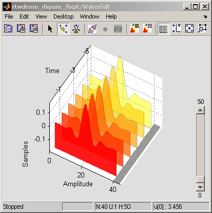
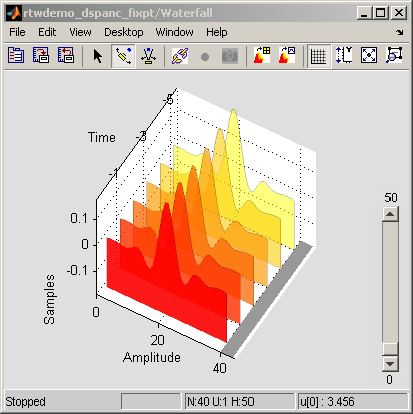

固定小数点信号処理
 

Published with MATLAB® 7.11
MATLAB and Simulink are registered trademarks of The MathWorks, Inc. Please see www.mathworks.com/trademarks for a list of other trademarks owned by The MathWorks, Inc. Other product or brand names are trademarks or registered trademarks of their respective owners.